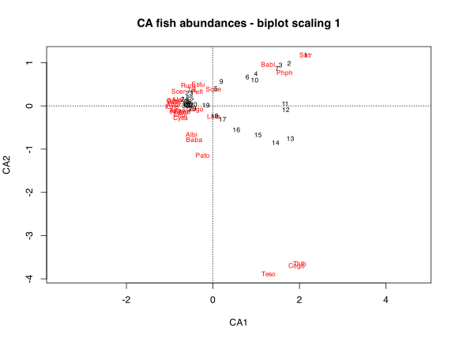
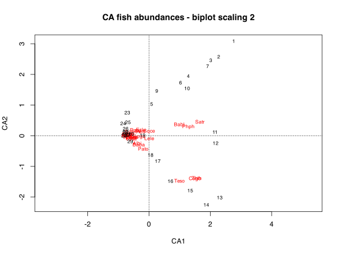
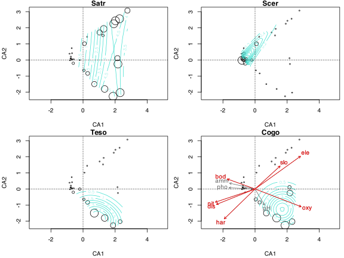

9. Correspondence Analysis (CA)
![]()
| Type | Name | Link |
|---|---|---|
| Slides | CA lecture slides | 💾 BCB743_09_CA.pdf |
| Data | The Doubs River data | 💾 Doubs.RData |
CA is an eigenvalue method that can be applied to calculate the degree of ‘correspondence’ between the rows and columns of a presence-absence or abundance species table. We say that CA maximises the correspondence between species scores and sample scores, whereas a PCA maximises the variance explained. The technique is best applied to a species dataset where the species (in the columns) show unimodal distributions across sites (down the rows). CA represents the distances among sites and among species by the \(\chi^{2}\) distance metric (rather than Euclidean distances in PCA), which does not suffer from the double-zero problem. Some ecologists argue that CA might be too much influenced by rare species. In ordination diagrams, species and sites are also represented by points as per usual convention. The relative positions of these points (species vs. sites, species vs. other species, or sites vs. other sites) indicate how strongly they ‘correspond’ to one another.
CA therefore finds the ordination space that answers questions such as, “Which sites do my species prefer?” or “Which sites to my species correspond to?” (from GUSTA ME). Also see David Zelený’s Analysis of community ecology data in R.
1 Set-up the analysis environment
2 The Doubs River data
This time we work with the species data:
Cogo Satr Phph Babl Thth Teso Chna Pato Lele Sqce Baba Albi Gogo Eslu Pefl
1 0 3 0 0 0 0 0 0 0 0 0 0 0 0 0
2 0 5 4 3 0 0 0 0 0 0 0 0 0 0 0
3 0 5 5 5 0 0 0 0 0 0 0 0 0 1 0
4 0 4 5 5 0 0 0 0 0 1 0 0 1 2 2
5 0 2 3 2 0 0 0 0 5 2 0 0 2 4 4
6 0 3 4 5 0 0 0 0 1 2 0 0 1 1 1
7 0 5 4 5 0 0 0 0 1 1 0 0 0 0 0
8 0 0 0 0 0 0 0 0 0 0 0 0 0 0 0
Rham Legi Scer Cyca Titi Abbr Icme Gyce Ruru Blbj Alal Anan
1 0 0 0 0 0 0 0 0 0 0 0 0
2 0 0 0 0 0 0 0 0 0 0 0 0
3 0 0 0 0 0 0 0 0 0 0 0 0
4 0 0 0 0 1 0 0 0 0 0 0 0
5 0 0 2 0 3 0 0 0 5 0 0 0
6 0 0 0 0 2 0 0 0 1 0 0 0
7 0 0 0 0 0 0 0 0 0 0 0 0
8 0 0 0 0 0 0 0 0 0 0 0 03 Do the CA
The vegan function cca() can be used for CA and Constrained Correspondence Analysis (CCA). When we do not specify constraints, as we do here, we will do a simple CA:
spe_ca <- cca(spe)Error in cca.default(spe): all row sums must be >0 in the community data matrixOkay, so there’s a problem. The error message says that at least one of the rows sums to 0. Which one?
apply(spe, 1, sum) 1 2 3 4 5 6 7 8 9 10 11 12 13 14 15 16 17 18 19 20 21 22 23 24 25 26
3 12 16 21 34 21 16 0 14 14 11 18 19 28 33 40 44 42 46 56 62 72 4 15 11 43
27 28 29 30
63 70 87 89 We see that the offending row is row 8, so we can omit it. This function will omit any row that sums to zero (or less):
Cogo Satr Phph Babl Thth Teso Chna Pato Lele Sqce Baba Albi Gogo Eslu Pefl
1 0 3 0 0 0 0 0 0 0 0 0 0 0 0 0
2 0 5 4 3 0 0 0 0 0 0 0 0 0 0 0
3 0 5 5 5 0 0 0 0 0 0 0 0 0 1 0
4 0 4 5 5 0 0 0 0 0 1 0 0 1 2 2
5 0 2 3 2 0 0 0 0 5 2 0 0 2 4 4
6 0 3 4 5 0 0 0 0 1 2 0 0 1 1 1
7 0 5 4 5 0 0 0 0 1 1 0 0 0 0 0
9 0 0 1 3 0 0 0 0 0 5 0 0 0 0 0
Rham Legi Scer Cyca Titi Abbr Icme Gyce Ruru Blbj Alal Anan
1 0 0 0 0 0 0 0 0 0 0 0 0
2 0 0 0 0 0 0 0 0 0 0 0 0
3 0 0 0 0 0 0 0 0 0 0 0 0
4 0 0 0 0 1 0 0 0 0 0 0 0
5 0 0 2 0 3 0 0 0 5 0 0 0
6 0 0 0 0 2 0 0 0 1 0 0 0
7 0 0 0 0 0 0 0 0 0 0 0 0
9 0 0 0 0 1 0 0 0 4 0 0 0Now we are ready for the CA:
spe_ca <- cca(spe)
spe_caCall: cca(X = spe)
Inertia Rank
Total 1.167
Unconstrained 1.167 26
Inertia is scaled Chi-square
Eigenvalues for unconstrained axes:
CA1 CA2 CA3 CA4 CA5 CA6 CA7 CA8
0.6010 0.1444 0.1073 0.0834 0.0516 0.0418 0.0339 0.0288
(Showing 8 of 26 unconstrained eigenvalues)The more verbose summary() output:
summary(spe_ca)
Call:
cca(X = spe)
Partitioning of scaled Chi-square:
Inertia Proportion
Total 1.167 1
Unconstrained 1.167 1
Eigenvalues, and their contribution to the scaled Chi-square
Importance of components:
CA1 CA2 CA3 CA4 CA5 CA6 CA7
Eigenvalue 0.601 0.1444 0.10729 0.08337 0.05158 0.04185 0.03389
Proportion Explained 0.515 0.1237 0.09195 0.07145 0.04420 0.03586 0.02904
Cumulative Proportion 0.515 0.6387 0.73069 0.80214 0.84634 0.88220 0.91124
CA8 CA9 CA10 CA11 CA12 CA13
Eigenvalue 0.02883 0.01684 0.010826 0.010142 0.007886 0.006123
Proportion Explained 0.02470 0.01443 0.009278 0.008691 0.006758 0.005247
Cumulative Proportion 0.93594 0.95038 0.959655 0.968346 0.975104 0.980351
CA14 CA15 CA16 CA17 CA18 CA19
Eigenvalue 0.004867 0.004606 0.003844 0.003067 0.001823 0.001642
Proportion Explained 0.004171 0.003948 0.003294 0.002629 0.001562 0.001407
Cumulative Proportion 0.984522 0.988470 0.991764 0.994393 0.995955 0.997362
CA20 CA21 CA22 CA23 CA24
Eigenvalue 0.001295 0.0008775 0.0004217 0.0002149 0.0001528
Proportion Explained 0.001110 0.0007520 0.0003614 0.0001841 0.0001309
Cumulative Proportion 0.998472 0.9992238 0.9995852 0.9997693 0.9999002
CA25 CA26
Eigenvalue 8.949e-05 2.695e-05
Proportion Explained 7.669e-05 2.310e-05
Cumulative Proportion 1.000e+00 1.000e+00
Scaling 2 for species and site scores
* Species are scaled proportional to eigenvalues
* Sites are unscaled: weighted dispersion equal on all dimensions
Species scores
CA1 CA2 CA3 CA4 CA5 CA6
Cogo 1.50075 -1.410293 0.26049 -0.307203 0.271777 -0.003465
Satr 1.66167 0.444129 0.57571 0.166073 -0.261870 -0.326590
Phph 1.28545 0.285328 -0.04768 0.018126 0.043847 0.200732
Babl 0.98662 0.360900 -0.35265 -0.009021 -0.012231 0.253429
Thth 1.55554 -1.389752 0.80505 -0.468471 0.471301 0.225409
Teso 0.99709 -1.479902 -0.48035 0.079397 -0.105715 -0.332445
Chna -0.54916 -0.051534 0.01123 -0.096004 -0.382763 0.134807
Pato -0.18478 -0.437710 -0.57438 0.424267 -0.587150 0.091866
Lele 0.01337 -0.095342 -0.57672 0.212017 0.126668 -0.389103
Sqce 0.01078 0.140577 -0.34811 -0.538268 0.185286 0.167087
Baba -0.33363 -0.300682 -0.04929 0.170961 -0.157203 0.103068
Albi -0.38357 -0.255310 -0.20136 0.374057 -0.385866 0.239001
Gogo -0.32152 -0.034382 -0.07423 -0.031236 0.014417 -0.156351
Eslu -0.26165 0.187282 0.00617 0.183771 0.295142 -0.262808
Pefl -0.28913 0.121044 -0.18919 0.367615 0.218087 -0.163675
Rham -0.60298 -0.057369 0.20341 0.214299 -0.050977 0.211926
Legi -0.58669 -0.082467 0.21198 0.050175 -0.120456 0.108724
Scer -0.61815 0.124733 0.13339 0.147190 0.317736 -0.340380
Cyca -0.57951 -0.110732 0.20173 0.308547 0.006854 0.153224
Titi -0.37880 0.138023 -0.07825 0.095793 0.256285 -0.029245
Abbr -0.70235 0.011155 0.40242 0.211582 0.138186 0.132297
Icme -0.73238 -0.009098 0.55678 0.321852 0.281812 0.172271
Gyce -0.69300 0.038971 0.37688 -0.183965 -0.051945 -0.011126
Ruru -0.44181 0.176915 -0.23691 -0.345104 0.129676 -0.043802
Blbj -0.70928 0.032317 0.40924 0.030224 0.049050 0.114560
Alal -0.63114 0.053594 0.15204 -0.661381 -0.414796 -0.206611
Anan -0.63578 -0.041894 0.30093 0.224044 0.030444 0.203160
Site scores (weighted averages of species scores)
CA1 CA2 CA3 CA4 CA5 CA6
1 2.76488 3.076306 5.3657489 1.99192 -5.07714 -7.80447
2 2.27540 2.565531 1.2659130 0.87538 -1.89139 -0.13887
3 2.01823 2.441224 0.5144079 0.79436 -1.03741 0.56015
4 1.28485 1.935664 -0.2509482 0.76470 0.54752 0.10579
5 0.08875 1.015182 -1.4555434 0.47672 2.69249 -2.92498
6 1.03188 1.712163 -0.9544059 0.01584 0.91932 0.39856
7 1.91427 2.256208 -0.0001407 0.39844 -1.07017 0.32127
9 0.25591 1.443008 -2.5777721 -3.41400 2.36613 2.71741
10 1.24517 1.526391 -1.9635663 -0.41230 0.69647 1.51859
11 2.14501 0.110278 1.6108693 -0.82023 0.53918 1.01153
12 2.17418 -0.251649 1.5845397 -0.81483 0.52623 1.05501
13 2.30944 -2.034439 1.9181448 -0.60481 0.64435 -0.14844
14 1.87141 -2.262503 1.1066796 -0.80840 1.09542 0.11038
15 1.34659 -1.805967 -0.6441505 -0.52803 0.76871 -0.67165
16 0.70214 -1.501167 -1.9735888 0.98502 -0.93585 -1.27168
17 0.28775 -0.836803 -1.2259108 0.73302 -1.57036 0.57315
18 0.05299 -0.647950 -0.9234228 0.35770 -0.95401 0.77738
19 -0.20584 -0.007252 -1.0154343 0.07041 -1.03450 0.51442
20 -0.57879 0.042849 -0.3660551 -0.15019 -0.61357 0.10115
21 -0.67320 0.038875 0.1194956 0.17256 -0.14686 -0.12018
22 -0.71933 0.014694 0.2204186 0.13598 0.09459 -0.02068
23 -0.70438 0.735398 -0.6546250 -6.61523 -2.49441 -1.73215
24 -0.83976 0.390120 0.5605295 -4.38864 -2.56916 -0.96702
25 -0.68476 0.418842 -0.2860819 -2.80336 -0.37540 -3.93791
26 -0.75808 0.210204 0.5894091 -0.70004 -0.01880 -0.10779
27 -0.75046 0.100869 0.5531191 -0.12946 0.29164 0.11280
28 -0.77878 0.088976 0.7379012 0.05204 0.40940 0.43236
29 -0.60815 -0.203235 0.5522726 0.43621 0.15010 0.25618
30 -0.80860 -0.019592 0.6686542 0.88136 0.52744 0.16456The output looks similar to that of a PCA. The important things to note are the inertia (unconstrained and total inertia are the same), the Eigenvalues for the unconstrained axes, the Species scores, and the Site scores. Their interpretation is the same as before, but we can reiterate. Let us calculate the total inertia:
The inertia for the first axis (CA1) is:
round(spe_ca$CA$eig[1], 5) CA1
0.60099 The inertia of CA1 and CA2 is:
The fraction of the variance explained by CA1 and CA2 is:
Above, the value is the same one as in Cumulative Proportion in the summary(spe_ca) output under the CA2 column.
Species scores are actual species scores as they now relate to species data. The most positive and most negative eigenvectors (or loadings) indicate those species that dominate in their influence along particular CA axes. For example, CA1 will be most heavily loaded by the species Cogo and Satr (eigenvectors of 1.50075 and 1.66167, respectively). If there is an environmental gradient, it will be these species that will be most affected. At the very least, we can say that the contributions of these species are having an overriding influence on the community differences seen between sites.
Site scores are also as seen earlier in PCA. The highest positive or negative loadings indicate sites that are dispersed far apart on the biplot (in ordination space). They will have large differences in fish community composition.
Please see Numerical Ecology in R (pp. 133 to 140). There you will find explanations for how to interpret the ordinations and the ordination diagrams shown below.
4 Ordination diagrams
The biplots for the above ordination are given here:
plot(spe_ca, scaling = 1, main = "CA fish abundances - biplot scaling 1")
plot(spe_ca, scaling = 2, main = "CA fish abundances - biplot scaling 2")
dev.off()null device
1 dev.new()Scaling 1: This scaling emphasises relationships between rows accurately in low-dimensional ordination space. Distances among objects (samples or sites) in the biplot are approximations of their \(\chi^{2}\) distances in multidimensional space. Objects found near a point representing a species are likely to contain a high contribution of that species.
Scaling 2: This scaling emphasises relationships between columns accurately in low-dimensional ordination space. Distances among objects (samples or sites) in the biplot are not approximations of their \(\chi^{2}\) distances in multidimensional space, but the distances among species are. Species positioned close to the point representing an object (a sample or site) are more likely to be found in that object or to have higher frequency there.
Below are biplots with site and species scores for four selected species. The plots are augmented with response surfaces made with penalised splines for each species showing i) where it are most abundant and ii) the direction of the response (here non-linear). On the last panel (bottom right) I also project vectors for the environmental drivers and mark the ones with the greatest influence in red. Lastly, the point size scales with species scores:
par(mar = c(4, 4, 0.9, 0.5) + .1, mfrow = c(2, 2))
with(spe, ordisurf(spe_ca ~ Satr, bubble = 3,
family = quasipoisson, knots = 2, col = "turquoise",
display = "sites", main = "Satr", plot = TRUE))
Family: quasipoisson
Link function: log
Formula:
y ~ poly(x1, 2) + poly(x2, 2) + poly(x1, 1):poly(x2, 1)
Total model degrees of freedom 6
REML score: 3.375507 abline(h = 0, v = 0, lty = 3)
with(spe, ordisurf(spe_ca ~ Scer, bubble = 3,
family = quasipoisson, knots = 2, col = "turquoise",
display = "sites", main = "Scer"))
Family: quasipoisson
Link function: log
Formula:
y ~ poly(x1, 2) + poly(x2, 2) + poly(x1, 1):poly(x2, 1)
Total model degrees of freedom 6
REML score: -12.42414 abline(h = 0, v = 0, lty = 3)
with(spe, ordisurf(spe_ca ~ Teso, bubble = 3,
family = quasipoisson, knots = 2, col = "turquoise",
display = "sites", main = "Teso"))
Family: quasipoisson
Link function: log
Formula:
y ~ poly(x1, 2) + poly(x2, 2) + poly(x1, 1):poly(x2, 1)
Total model degrees of freedom 6
REML score: -10.15301 abline(h = 0, v = 0, lty = 3)
with(spe, ordisurf(spe_ca ~ Cogo, bubble = 3,
family = quasipoisson, knots = 2, col = "turquoise",
display = "sites", main = "Cogo"))
Family: quasipoisson
Link function: log
Formula:
y ~ poly(x1, 2) + poly(x2, 2) + poly(x1, 1):poly(x2, 1)
Total model degrees of freedom 6
REML score: -27.82059 abline(h = 0, v = 0, lty = 3)
# a posteriori projection of environmental variables in a CA
env <- dplyr::select(env, -1)
# we removed the 8th row in spe, so do it here too
env <- dplyr::slice(env, -8)
# the last plot produced (CA scaling 2) must be active
# scaling 2 is default
(spe_ca_env <- envfit(spe_ca, env, scaling = 2))
***VECTORS
CA1 CA2 r2 Pr(>r)
ele 0.81159 0.58423 0.8078 0.001 ***
slo 0.73753 0.67531 0.2976 0.002 **
dis -0.92837 -0.37166 0.4440 0.002 **
pH 0.50723 -0.86181 0.0908 0.219
har -0.71728 -0.69678 0.4722 0.002 **
pho -0.99897 0.04533 0.1757 0.059 .
nit -0.94906 -0.31511 0.4510 0.001 ***
amm -0.97495 0.22241 0.1762 0.071 .
oxy 0.93352 -0.35854 0.6263 0.001 ***
bod -0.94094 0.33857 0.2237 0.025 *
---
Signif. codes: 0 '***' 0.001 '**' 0.01 '*' 0.05 '.' 0.1 ' ' 1
Permutation: free
Number of permutations: 999plot(spe_ca_env, col = "grey40")
plot(spe_ca_env, p.max = 0.05, col = "red") # plot significant variables with a different colour
5 References
Reuse
Citation
@online{smit2021,
author = {Smit, AJ},
title = {9. {Correspondence} {Analysis} {(CA)}},
date = {2021-01-01},
url = {http://tangledbank.netlify.app/BCB743/09-CA.html},
langid = {en}
}